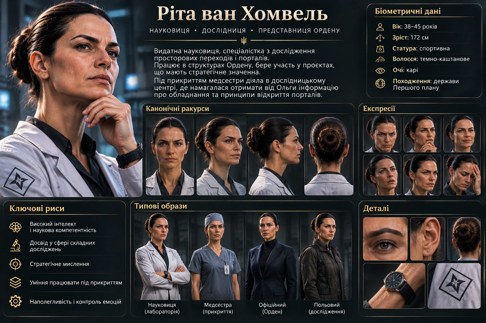

Scientist · The Order
A researcher who expects answers
Rita van Homvel is a distinguished scientist associated with portal research. She acts in the interests of the Order and seeks to understand how transitions work.
StatusOrder representative, scientist
FieldResearch into portals and interspatial transitions
Cover identityNurse at a research centre
Known interestEquipment she believes is used to open portals
CHARACTER BACKGROUND
Undercover
At the research centre, Rita posed as a nurse. This cover gave her access to Olha, a rescuer who had used portals during her work. Rita wanted to learn what equipment Olha used to open transitions and who might have developed it.
When ordinary conversations failed to produce the answers she wanted, Rita resorted to threats and brutal pressure. She was convinced that portals relied on a technical system that could be studied and reproduced if she obtained enough information.
At this stage, only her scientific work, connection to the Order and attempt to obtain information about portals from Olha have been established. Further biographical details remain unknown.